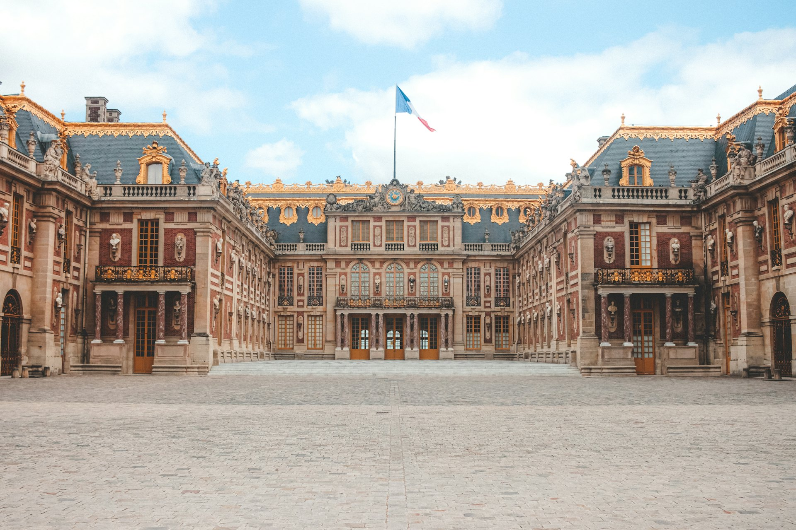

Cadeau de Noël 2026 : offrir une sortie ou une expérience en France
Croisière, cabaret, château, montagne ou Riviera : nos idées de cadeaux à vivre, et comment les offrir.
Photo : Mathias Reding / Unsplash
Offrir une sortie plutôt qu’un objet : un dîner sur la Seine, une soirée au cabaret, une journée à Versailles ou au Mont-Saint-Michel, une montée à l’Aiguille du Midi… Voici nos idées de cadeaux d’expérience en France pour Noël 2026, classées par envie, avec à chaque fois notre guide pour bien choisir.
Pour un couple
Un dîner croisière sur la Seine
Paris illuminé depuis le fleuve, de la tour Eiffel à Notre-Dame. Il existe des croisières de jour, au coucher du soleil ou avec dîner : notre guide compare les compagnies et les points de départ.
Une soirée au Crazy Horse
Le cabaret de l’avenue George-V présente « Totally Crazy », un spectacle d’environ 90 minutes, avec ou sans champagne, qu’on peut combiner avec un dîner.
Un week-end pour la Saint-Valentin
Le 14 février 2027 tombe un dimanche : un cadeau à ouvrir à Noël et à vivre deux mois plus tard. Nos idées de week-end à deux à Paris et sur la Côte d’Azur.
Pour toute la famille
Une journée à Disneyland Paris
Le grand classique des enfants, avec ou sans transport depuis Paris.
Le château de Versailles
Le château, la galerie des Glaces et les jardins, en visite libre, guidée ou à vélo dans le domaine.
Le Mont-Saint-Michel
Une journée au départ de Paris ou une visite guidée sur place, pour découvrir l’abbaye et la baie.
Pour les amoureux de montagne ou de soleil
L’Aiguille du Midi à Chamonix
Le téléphérique monte à 3 842 mètres en une vingtaine de minutes, face au mont Blanc. À combiner avec le train du Montenvers et la Mer de Glace.
Monaco et la Riviera
Le Rocher, le casino de Monte-Carlo et le village perché d’Èze : une excursion d’une journée au soleil d’hiver.
Comment offrir une activité
- Fixez la date ensemble : offrez l’idée à Noël (une carte, une photo de l’endroit) et réservez ensuite le jour qui convient.
- Regardez les conditions d’annulation : beaucoup d’activités en ligne s’annulent gratuitement jusqu’à 24 h avant, mais pas toutes ; vérifiez sur la fiche de l’offre avant de payer.
- Pensez aux vacances : une sortie à vivre pendant les vacances de Noël ou les vacances de février 2027.
- Au ski, un cours ou une sortie encadrée se réserve tôt pour les périodes de vacances.
Idées relevées en novembre 2026 à partir de nos guides ; horaires et prix sur chaque page et sur la fiche de l’activité.
Nos guides pour les fêtes


Activités à réserver
Quelques idées de cadeaux à réserver.
-
Dîners croisière sur la Seine
Menus à bord, de la formule simple au dîner gastronomique.
-
Spectacle du Crazy Horse
Billet pour Totally Crazy, avec ou sans champagne.
-
Billets et visites guidées de Versailles
Billet Passeport, visites guidées et transport depuis Paris.
-
Aiguille du Midi et Mer de Glace
Billets et excursions guidées au départ de Chamonix ou de Genève.
Liens partenaires.
Vous partez pendant les fêtes ? Voir notre calendrier des vacances de Noël 2026.
Questions fréquentes
Quelle expérience offrir à Noël en France ?
Pour un couple, un dîner croisière sur la Seine ou une soirée au Crazy Horse ; pour une famille, Disneyland Paris, Versailles ou le Mont-Saint-Michel ; pour les amateurs de montagne, l’Aiguille du Midi à Chamonix.
Peut-on offrir une activité sans connaître la date ?
Le plus simple est d’offrir l’idée à Noël et de réserver la date ensemble ensuite. Si vous réservez à l’avance, choisissez une offre avec annulation gratuite et vérifiez ses conditions avant de payer.
Quelle sortie offrir pour la Saint-Valentin 2027 ?
Le 14 février 2027 tombe un dimanche : un week-end à Paris avec un dîner sur la Seine, ou sur la Côte d’Azur pendant la saison du mimosa.